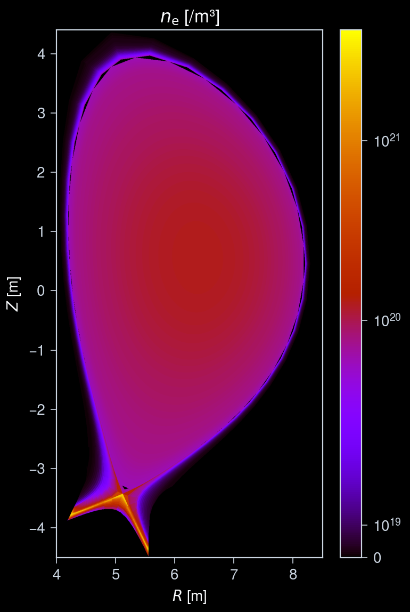
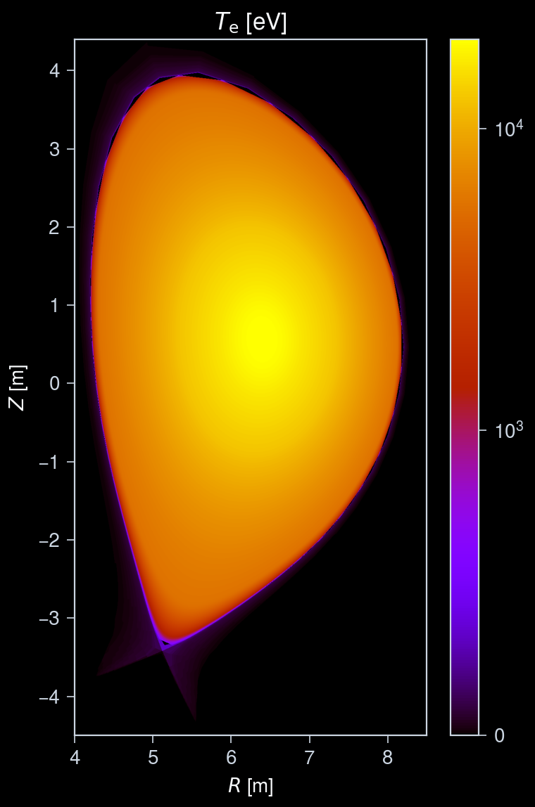
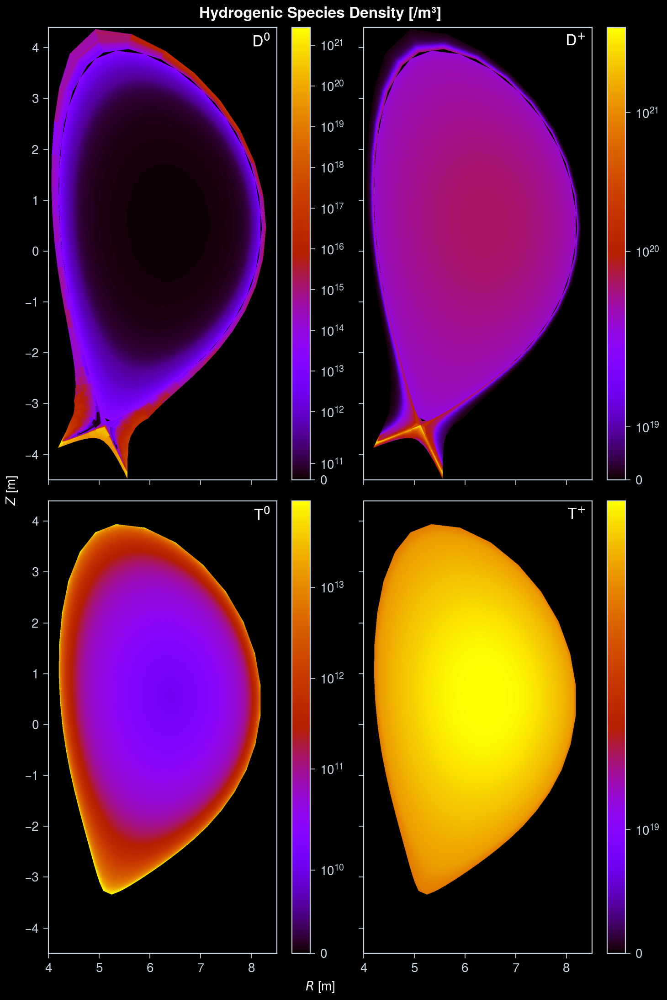
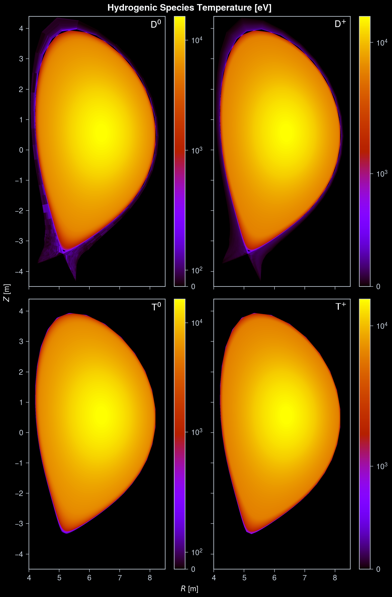
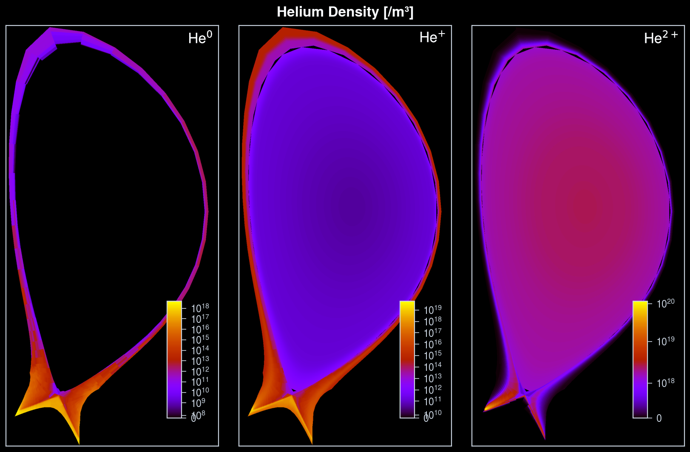
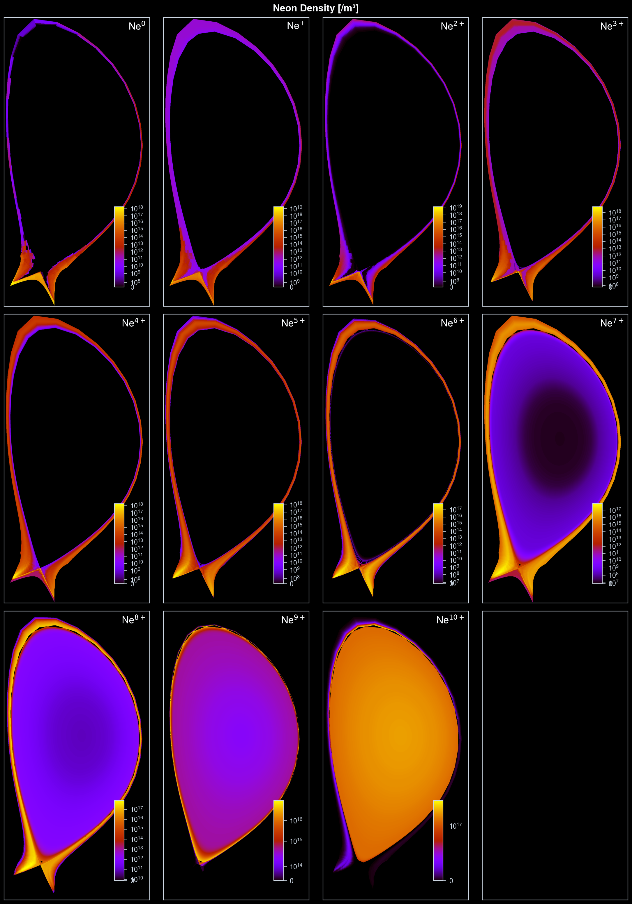
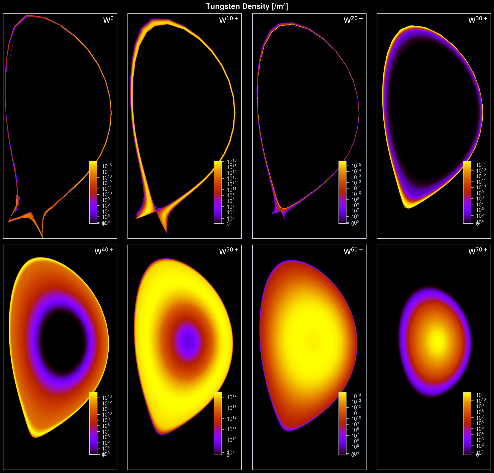
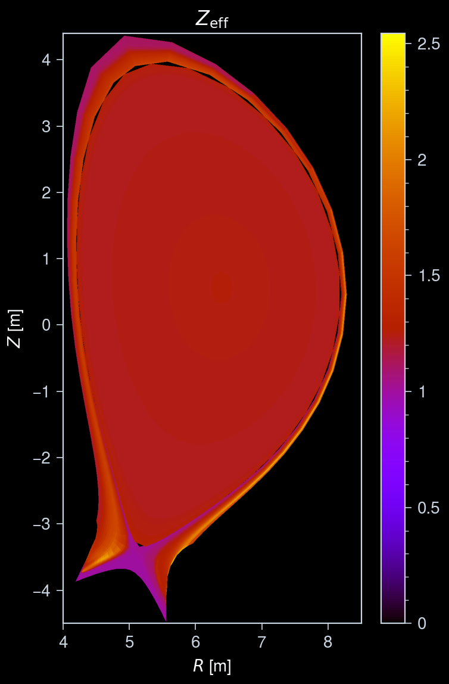

Interactive online version:
Full Plasma (Core + Edge profiles)¶
This notebook demonstrates how to load and visualize a plasma object produced by cherab’s Plasma class using the cherab.imas interface.
The example test data was calculated by JINTRAC for an ITER 15 MA H-mode scenario.
[1]:
import numpy as np
import ultraplot as uplt
from matplotlib.colors import SymLogNorm
from rich import print as rprint
from rich.table import Table
from cherab.core.math import sample3d, sample3d_grid
from cherab.imas.datasets import iter_jintrac
from cherab.imas.plasma import load_plasma
# Set dark background for plots
uplt.rc.style = "dark_background"
uplt.rc["title.borderwidth"] = 0
Downloading ADAS files¶
JINTRAC dataset contains bundled ion species data.
To split the ion bundles into individual ion stages, we use the coronal equilibrium solver solve_coronal_equilibrium, where the specific ADAS files are required.
Almost all of the required ADAS files are downloaded by default when executing populate function, but specific species files (e.g. tungsten) are not downloaded by default.
To download the required ADAS files, run the following code cell.
[2]:
from cherab.core.atomic import elements
from cherab.openadas.install import install_files
install_files(
{
"adf11scd": (
(elements.neon, "adf11/scd96/scd96_ne.dat"),
(elements.tungsten, "adf11/scd50/scd50_w.dat"), # Not downloaded by default
),
"adf11acd": (
(elements.neon, "adf11/acd96/acd96_ne.dat"),
(elements.tungsten, "adf11/acd50/acd50_w.dat"), # Not downloaded by default
),
},
download=True,
)
Installing adf11/scd96/scd96_ne.dat...
Installing adf11/scd50/scd50_w.dat...
- downloading ADF file 'adf11/scd50/scd50_w.dat' to '/home/runner/.cherab/openadas/repository/_download_cache/adf11/scd50/scd50_w.dat'
Installing adf11/acd96/acd96_ne.dat...
Installing adf11/acd50/acd50_w.dat...
- downloading ADF file 'adf11/acd50/acd50_w.dat' to '/home/runner/.cherab/openadas/repository/_download_cache/adf11/acd50/acd50_w.dat'
Define a function to plot plasma quantities¶
[3]:
def plot_quantity(
ax: uplt.axes.Axes,
quantity: np.ndarray,
extent: tuple[float, float, float, float],
logscale: bool = False,
symmetric: bool = False,
cbar_kwargs: dict = None,
) -> uplt.axes.Axes:
"""Make a 2D plot of quantity, optionally on a log scale."""
if logscale:
# Plot lowest values (mainly 0's) on linear map, as log(0) = -inf.
linthresh = np.percentile(np.unique(quantity), 1)
norm = SymLogNorm(
linthresh=float(max(linthresh, 1.0e-10 * quantity.max())),
base=10,
)
else:
norm = None
# Sampled data is indexed as quantity(x, y),
# but matplotlib's imshow expects quantity(y, x).
if symmetric and not logscale:
vmax = np.abs(quantity).max()
image = ax.imshow(
quantity.T,
extent=extent,
discrete=False,
origin="lower",
vmin=-vmax,
vmax=vmax,
cmap="berlin",
)
else:
image = ax.imshow(
quantity.T,
extent=extent,
discrete=False,
origin="lower",
norm=norm,
cmap="gnuplot",
)
ax.colorbar(
image,
formatter="log" if logscale else None,
tickminor=True,
**(cbar_kwargs or {}),
)
ax.format(
aspect="equal",
xlabel="$R$ [m]",
ylabel="$Z$ [m]",
xlocator=1,
ylocator=1,
)
return ax
Retrieve ITER JINTRAC sample data¶
[4]:
path = iter_jintrac()
Load the plasma object¶
The instance of the Plasma class is created by loading the core_profiles and edge_profiles IDSs from the IMAS database.
The equilibrium information is automatically loaded from the equilibrium IDS if not already provided.
[5]:
plasma = load_plasma(path)
08:30:35 INFO Parsing data dictionary version 4.1.1 @dd_zip.py:89
08:30:36 INFO Parsing data dictionary version 4.0.0 @dd_zip.py:89
/home/runner/work/imas/imas/src/cherab/imas/plasma/blend.py:181: RuntimeWarning: The 'get_slice' method is not implemented for the URI '/home/runner/.cache/cherab/imas/iter_scenario_53298_seq1_DD4_mod.nc'. Falling back to 'get' method because the returned IDS contains a single time slice.
core_profiles_ids = get_ids_time_slice(
/home/runner/work/imas/imas/src/cherab/imas/plasma/blend.py:207: RuntimeWarning: The 'get_slice' method is not implemented for the URI '/home/runner/.cache/cherab/imas/iter_scenario_53298_seq1_DD4_mod.nc'. Falling back to 'get' method because the returned IDS contains a single time slice.
edge_profiles_ids = get_ids_time_slice(
/home/runner/work/imas/imas/src/cherab/imas/plasma/equilibrium.py:104: RuntimeWarning: The 'get_slice' method is not implemented for the URI '/home/runner/.cache/cherab/imas/iter_scenario_53298_seq1_DD4_mod.nc'. Falling back to 'get' method because the returned IDS contains a single time slice.
equilibrium_ids = get_ids_time_slice(
/home/runner/work/imas/imas/src/cherab/imas/plasma/equilibrium.py:188: RuntimeWarning: The 'get_slice' method is not implemented for the URI '/home/runner/.cache/cherab/imas/iter_scenario_53298_seq1_DD4_mod.nc'. Falling back to 'get' method because the returned IDS contains a single time slice.
equilibrium_ids = get_ids_time_slice(
Warning: z_min or z_max is EMPTY_FLOAT for state index 0. Using z_average to determine z_min and z_max.
Warning: z_min or z_max is EMPTY_FLOAT for state index 0. Using z_average to determine z_min and z_max.
Warning: z_min or z_max is EMPTY_FLOAT for state index 0. Using z_average to determine z_min and z_max.
Warning: z_min or z_max is EMPTY_FLOAT for state index 1. Using z_average to determine z_min and z_max.
Warning! Unable to verify that the cell nodes are in the winding order.
Warning! Using average ion temperature for the D ion (z=+1).
Warning! Using average ion temperature for the He ion (z=+1).
Warning! Using average ion temperature for the He ion (z=+2).
Warning! Using average ion temperature for the Ne ion (z=+1).
Warning! Using average ion temperature for the Ne ion (z=+2).
Warning! Using average ion temperature for the Ne ion (z=+3).
Warning! Using average ion temperature for the Ne ion (z=+4).
Warning! Using average ion temperature for the Ne ion (z=+5).
Warning! Using average ion temperature for the Ne ion (z=+6).
Warning! Using average ion temperature for the Ne ion (z=+7).
Warning! Using average ion temperature for the Ne ion (z=+8).
Warning! Using average ion temperature for the Ne ion (z=+9).
Warning! Using average ion temperature for the Ne ion (z=+10).
Warning! Using average ion temperature for the W ion (z=+1).
Warning! Using average ion temperature for the W ion (z=+2).
Warning! Using average ion temperature for the W ion (z=+3).
Warning! Using average ion temperature for the W ion (z=+4).
Warning! Using average ion temperature for the W ion (z=+5).
Warning! Using average ion temperature for the W ion (z=+6).
Warning! Using average ion temperature for the W ion (z=+7).
Warning! Using average ion temperature for the W ion (z=+8).
Warning! Using average ion temperature for the W ion (z=+9).
Warning! Using average ion temperature for the W ion (z=+10).
Warning! Using average ion temperature for the W ion (z=+11).
Warning! Using average ion temperature for the W ion (z=+12).
Warning! Using average ion temperature for the W ion (z=+13).
Warning! Using average ion temperature for the W ion (z=+14).
Warning! Using average ion temperature for the W ion (z=+15).
Warning! Using average ion temperature for the W ion (z=+16).
Warning! Using average ion temperature for the W ion (z=+17).
Warning! Using average ion temperature for the W ion (z=+18).
Warning! Using average ion temperature for the W ion (z=+19).
Warning! Using average ion temperature for the W ion (z=+20).
Warning! Using average ion temperature for the W ion (z=+21).
Warning! Using average ion temperature for the W ion (z=+22).
Warning! Using average ion temperature for the W ion (z=+23).
Warning! Using average ion temperature for the W ion (z=+24).
Warning! Using average ion temperature for the W ion (z=+25).
Warning! Using average ion temperature for the W ion (z=+26).
Warning! Using average ion temperature for the W ion (z=+27).
Warning! Using average ion temperature for the W ion (z=+28).
Warning! Using average ion temperature for the W ion (z=+29).
Warning! Using average ion temperature for the W ion (z=+30).
Warning! Using average ion temperature for the W ion (z=+31).
Warning! Using average ion temperature for the W ion (z=+32).
Warning! Using average ion temperature for the W ion (z=+33).
Warning! Using average ion temperature for the W ion (z=+34).
Warning! Using average ion temperature for the W ion (z=+35).
Warning! Using average ion temperature for the W ion (z=+36).
Warning! Using average ion temperature for the W ion (z=+37).
Warning! Using average ion temperature for the W ion (z=+38).
Warning! Using average ion temperature for the W ion (z=+39).
Warning! Using average ion temperature for the W ion (z=+40).
Warning! Using average ion temperature for the W ion (z=+41).
Warning! Using average ion temperature for the W ion (z=+42).
Warning! Using average ion temperature for the W ion (z=+43).
Warning! Using average ion temperature for the W ion (z=+44).
Warning! Using average ion temperature for the W ion (z=+45).
Warning! Using average ion temperature for the W ion (z=+46).
Warning! Using average ion temperature for the W ion (z=+47).
Warning! Using average ion temperature for the W ion (z=+48).
Warning! Using average ion temperature for the W ion (z=+49).
Warning! Using average ion temperature for the W ion (z=+50).
Warning! Using average ion temperature for the W ion (z=+51).
Warning! Using average ion temperature for the W ion (z=+52).
Warning! Using average ion temperature for the W ion (z=+53).
Warning! Using average ion temperature for the W ion (z=+54).
Warning! Using average ion temperature for the W ion (z=+55).
Warning! Using average ion temperature for the W ion (z=+56).
Warning! Using average ion temperature for the W ion (z=+57).
Warning! Using average ion temperature for the W ion (z=+58).
Warning! Using average ion temperature for the W ion (z=+59).
Warning! Using average ion temperature for the W ion (z=+60).
Warning! Using average ion temperature for the W ion (z=+61).
Warning! Using average ion temperature for the W ion (z=+62).
Warning! Using average ion temperature for the W ion (z=+63).
Warning! Using average ion temperature for the W ion (z=+64).
Warning! Using average ion temperature for the W ion (z=+65).
Warning! Using average ion temperature for the W ion (z=+66).
Warning! Using average ion temperature for the W ion (z=+67).
Warning! Using average ion temperature for the W ion (z=+68).
Warning! Using average ion temperature for the W ion (z=+69).
Warning! Using average ion temperature for the W ion (z=+70).
Warning! Using average ion temperature for the W ion (z=+71).
Warning! Using average ion temperature for the W ion (z=+72).
Warning! Using average ion temperature for the W ion (z=+73).
Warning! Using average ion temperature for the W ion (z=+74).
Warning! Species of type 'molecule' are currently not supported.
The following species will be skipped: D-D molecule
The loaded plasma object contains both core and edge profiles and all available species information shown below.
[6]:
# Organize plasma species by symbol and charge
species = {}
for s in plasma.composition:
symbol = s.element.symbol
if symbol not in species:
species[symbol] = []
species[symbol].append(s)
# Sort species of each element by charge
for symbol in species:
species[symbol].sort(key=lambda x: (x.element.atomic_number, x.element.atomic_weight, x.charge))
# Print table of plasma species
table = Table(title="Plasma Species")
table.add_column("Element", style="cyan", justify="right")
table.add_column("Charge", justify="left")
for symbol in species:
charges = [s.charge for s in species[symbol]]
charges_split = [charges[i : i + 10] for i in range(0, len(charges), 10)]
charges_strs = [", ".join(f"{c:d}+" for c in split) for split in charges_split]
charges_str = "\n".join(charges_strs)
table.add_row(symbol, charges_str)
rprint(table)
Plasma Species ┏━━━━━━━━━┳━━━━━━━━━━━━━━━━━━━━━━━━━━━━━━━━━━━━━━━━━━━━━━━━━━┓ ┃ Element ┃ Charge ┃ ┡━━━━━━━━━╇━━━━━━━━━━━━━━━━━━━━━━━━━━━━━━━━━━━━━━━━━━━━━━━━━━┩ │ D │ 0+, 1+ │ │ T │ 0+, 1+ │ │ He │ 0+, 1+, 2+ │ │ Ne │ 0+, 1+, 2+, 3+, 4+, 5+, 6+, 7+, 8+, 9+ │ │ │ 10+ │ │ W │ 0+, 1+, 2+, 3+, 4+, 5+, 6+, 7+, 8+, 9+ │ │ │ 10+, 11+, 12+, 13+, 14+, 15+, 16+, 17+, 18+, 19+ │ │ │ 20+, 21+, 22+, 23+, 24+, 25+, 26+, 27+, 28+, 29+ │ │ │ 30+, 31+, 32+, 33+, 34+, 35+, 36+, 37+, 38+, 39+ │ │ │ 40+, 41+, 42+, 43+, 44+, 45+, 46+, 47+, 48+, 49+ │ │ │ 50+, 51+, 52+, 53+, 54+, 55+, 56+, 57+, 58+, 59+ │ │ │ 60+, 61+, 62+, 63+, 64+, 65+, 66+, 67+, 68+, 69+ │ │ │ 70+, 71+, 72+, 73+, 74+ │ └─────────┴──────────────────────────────────────────────────┘
Plot several species’ profiles¶
Define some constants related to sampling and plotting.
[7]:
Electron density and temperature¶
[8]:
# Sample electron density
r_pts, _, z_pts, n_e = sample3d(
plasma.electron_distribution.density,
(R_MIN, R_MAX, n_r),
(0, 0, 1),
(Z_MIN, Z_MAX, n_z),
)
n_e = n_e.squeeze()
# Plot electron density
fig, ax = uplt.subplots()
ax = plot_quantity(
ax,
n_e,
extent,
logscale=True,
)
ax.format(
title="$n_\\mathrm{e}$ [/m³]",
)
# Sample electron temperature
te_plasma = sample3d_grid(
plasma.electron_distribution.effective_temperature,
r_pts,
[0],
z_pts,
).squeeze()
# Plot electron temperature
fig, ax = uplt.subplots()
ax = plot_quantity(
ax,
te_plasma,
extent,
logscale=True,
)
ax.format(
title="$T_\\mathrm{e}$ [eV]",
)


Hydrogenic species (D, T) density and temperature¶
[9]:
def species_label(species) -> str:
"""Construct element symbol with charge label"""
if species.charge == 0:
label = f"{species.element.symbol}$^{{0}}$"
elif species.charge == 1:
label = f"{species.element.symbol}$^{{+}}$"
else:
label = f"{species.element.symbol}$^{{{species.charge}+}}$"
return label
# === Density Plot ===
fig, axs = uplt.subplots(
nrows=2,
ncols=2,
)
axs.format(suptitle="Hydrogenic Species Density [/m³]")
for i_row, s_list in enumerate([species["D"], species["T"]]):
for i_col, s in enumerate(s_list):
# Sample density
density = sample3d_grid(
s.distribution.density,
r_pts,
[0],
z_pts,
).squeeze()
# Plot density
ax = plot_quantity(
axs[i_row, i_col],
density,
extent,
logscale=True,
)
ax.format(urtitle=species_label(s))
# === Temperature Plot ===
fig, axs = uplt.subplots(
nrows=2,
ncols=2,
)
axs.format(suptitle="Hydrogenic Species Temperature [eV]")
for i_row, s_list in enumerate([species["D"], species["T"]]):
for i_col, s in enumerate(s_list):
# Sample temperature
temperature = sample3d_grid(
s.distribution.effective_temperature,
r_pts,
[0],
z_pts,
).squeeze()
# Plot deutrium temperature
ax = plot_quantity(
axs[i_row, i_col],
temperature,
extent,
logscale=True,
)
ax.format(urtitle=species_label(s))


Other species’ density¶
The number of charge states of tungsten is so large that we only plot every 10th charge state to avoid overcrowding the figure.
[10]:
for s_list in [species["He"], species["Ne"], species["W"][::10]]:
# Each element gets its own figure
num_species = len(s_list)
ncols = num_species if num_species < 4 else 4
nrows = int(np.ceil(num_species / ncols))
fig, axs = uplt.subplots(
nrows=nrows,
ncols=ncols,
)
for i_ax, s in enumerate(s_list):
# Sample density
density = sample3d_grid(
s.distribution.density,
r_pts,
[0],
z_pts,
).squeeze()
# Make non-physical negative densities zero
density[density <= 0] = 0.0
# Plot density
ax = plot_quantity(
axs[i_ax],
density,
extent,
logscale=True,
cbar_kwargs=dict(
loc="lr",
orientation="vertical",
ticklabelsize="small",
length=5,
frame=False,
),
)
ax.format(
urtitle=species_label(s),
)
axs.format(
suptitle=f"{s_list[0].element.name.capitalize()} Density [/m³]",
xlabel="",
ylabel="",
xtickloc="neither",
ytickloc="neither",
linestyle="none",
)



Plot \(Z_\mathrm{eff}\)¶
Plot the effective charge profile, \(Z_\mathrm{eff}\), which is calculated with all available species’ densities.
[11]:
def z_effective(x: float, y: float, z: float) -> float:
"""Calculate effective charge, $Z_\\mathrm{eff}$, at a given point.
Need to implement error handling for points where zero density is sampled.
"""
try:
z_eff = plasma.z_effective(x, y, z)
except ValueError:
z_eff = 0.0
return z_eff
[12]:
# Sample z_effecitivity
z_eff = sample3d_grid(
z_effective,
r_pts,
[0],
z_pts,
).squeeze()
# Plot z_effecitivity
fig, ax = uplt.subplots()
ax = plot_quantity(
ax,
z_eff,
extent,
logscale=False,
)
ax.format(
title="$Z_\\mathrm{eff}$",
)
